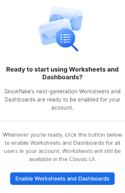
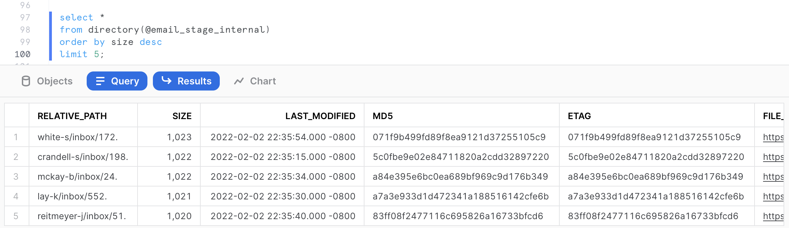
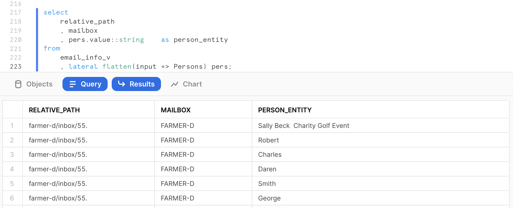
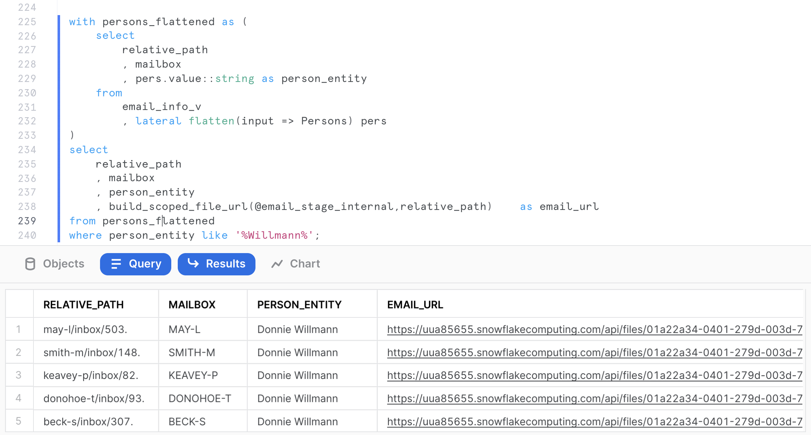
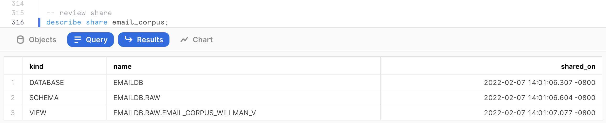

This Quickstart is designed to help you understand the capabilities included in Snowflake's support for unstructured data. Sign up for a free 30-day trial of Snowflake and follow along with this lab exercise. After completing this lab, you'll be ready to start storing and managing your own unstructured data in Snowflake.
Prerequisites
- Snowflake account
- Basic knowledge of SQL, database concepts, and objects
- Recommended to first complete Getting Started with SnowSQL
What You'll Learn
- How to access and store unstructured data
- How to govern unstructured data
- How to search for unstructured data using directory tables
- How to securely share unstructured data
- How to process unstructured data
What You'll Build
- A stage for storing and accessing files in Snowflake
- A user-defined function using Snowflake's engine to process files
- A secure view to share in the Snowflake Marketplace
The data provided for this lab is an extract from the Enron email database made available by Carnegie Mellon University (https://www.cs.cmu.edu/~enron/).
Use of the data provided is limited to this quickstart in connection with the Snowflake service and is subject to any additional terms and conditions on the Carnegie Mellon site.
By accessing this data, you acknowledge and agree to the limits and terms related to the use of the Enron email data.
If you haven't already, register for a Snowflake free 30-day trial. The Snowflake edition (Standard, Enterprise, Business Critical, e.g.), cloud provider (AWS, Azure, e.g.), and Region (US East, EU, e.g.) do not matter for this lab. We suggest you select the region which is physically closest to you and the Enterprise Edition, our most popular offering. After registering, you will receive an email with an activation link and your Snowflake account URL.
Navigating to Snowsight
For this lab, you will use the latest Snowflake web interface, Snowsight.
- Log into your Snowflake trial account
- Click on Snowsight Worksheets tab. The new web interface opens in a separate tab or window.
- Click Worksheets in the left-hand navigation bar. The Ready to Start Using Worksheets and Dashboards dialog opens.
- Click the Enable Worksheets and Dashboards button.

Let's start by preparing to load the unstructured data into Snowflake. Snowflake supports two types of stages for storing data files used for loading and unloading:
- Internal stages store the files internally within Snowflake.
- External stages store the files in an external location (i.e. S3 bucket) that is referenced by the stage. An external stage specifies location and credential information, if required, for the bucket.
Create a Database, Schema, and Warehouse
Before creating any stages, let's create a database and a schema that will be used for loading the unstructured data. We will use the UI within the Worksheets tab to run the DDL that creates the database and schema. Copy the commands below into your trial environment, and execute each individually.
use role sysadmin;
create or replace database emaildb comment = 'Enron Email Corpus Database';
create or replace schema raw;
create or replace warehouse quickstart;
use database emaildb;
use schema raw;
use warehouse quickstart;
Access Unstructured Data Stored in an S3 Bucket
The data we will be using in this lab is stored in an S3 bucket.
Create an External Stage
You are working with unstructured PDFs that have already been staged in a public, external S3 bucket. Before you can use this data, you first need to create a Stage that specifies the location of our external bucket.
Grant the PUBLIC schema access to the database, schema, and warehouse just created (This will be relevant in the next section).
use role sysadmin;
grant usage on database emaildb to public;
grant usage on schema emaildb.raw to public;
grant usage on warehouse quickstart to public;
From the same worksheet you've been using, run this command to create an external stage called email_stage.
use schema emaildb.raw;
-- Create an external stage where files are stored.
create or replace stage email_stage
url = "s3://sfquickstarts/Getting Started Unstructured Data/Emails/mailbox/"
directory = (enable = true auto_refresh = true);
You can run this command to see a list of the files in your external stage.
ls @email_stage;

We can see that the stage contains various mailboxes from Enron users containing some files (which are text files) of various sizes. We can get a summary of the file corpus in the query results on the right-hand side. For the purpose of this quickstart, just a sample of 226 files out of 517,551 files has been extracted.

The size of the files: We can see that the file size ranges from 666 bytes to 1023 bytes, with the majority of the files closer to 1023 bytes. If we click on the size metric, we can get more detailed information. The total corpus size is 208,414 bytes, with an average size of 922 bytes. If we hover over the histogram, we can filter results based on file size.
Store Unstructured Data in an Internal Stage
Alternatively, you can store data directly in Snowflake with internal stages. Now, we want to create an internal stage and upload the same files while maintaining the directory structure of the various individual mailboxes on an internal stage.
Create an Internal Stage
Run this command to create an internal stage called email_stage_internal as follows.
use schema emaildb.raw;
create or replace stage email_stage_internal
directory = (enable = TRUE)
encryption = (type = 'SNOWFLAKE_SSE');
Download Data and Scripts
We need to first download the following files to the local workstation by clicking on the hyperlinks below. The subsequent steps require SnowSQL CLI installed on the local workstation where the lab is ran:
- upload.snf: SnowSQL Script which will upload the files to the internal stage just created.
- mailbox.tar.gz: The actual email data.
Once downloaded, untar the contents of the files on your local workstation and note the full path including the mailbox parent directory of the tar archive. In the example below, this path is /Users/znh/Downloads/quickstart/. The file can be untarred as follows.
cd /Users/znh/Downloads/quickstart/
tar xzvf mailbox.tar.gz
Upload Files using SnowSQL
Before opening terminal, find out your account identifier which for the trial account will be
For example, the URL to access the trial account is https://xx74264.ca-central-1.aws.snowflakecomputing.com/. These are the values for the account identifier:
- Account Locator:
xx74264 - Region ID:
ca-central-1 - Cloud:
aws
There may be additional segments if you are using your own account part of an organization. You can find those from the URL of your Snowflake account. Please check the Snowflake Documentation for additional details on this topic.
Now open a terminal on your workstation and run the following SnowSQL command. You will be prompted for the password for the Snowflake user passed as a parameter.
snowsql -a <account-identifier> \
-u <user-id> -d emaildb -r sysadmin -s raw \
-D srcpath=<source-path> \
-D stagename=@email_stage_internal \
-o variable_substitution=true -f upload.snf
Using the examples above for the path and the account identifier, and the userid myuser, the command would be:
snowsql -a xx74264.ca-central-1.aws \
-u myuser -d emaildb -r sysadmin -s raw \
-D srcpath=/Users/znh/Downloads/quickstart/mailbox \
-D stagename=@email_stage_internal \
-o variable_substitution=true -f /Users/znh/Downloads/quickstart/upload.snf
The upload may take a few seconds depending on the speed of your internet connection. If the upload is successful, you should see data being uploaded in each subfolder, and you may see an output like the following on your terminal.

Verify if the files have been uploaded successfully by entering the following command on your Snowflake worksheet.
ls @email_stage_internal;
You should now see an identical list of files uploaded to the internal stage. Make sure you see 226 files uploaded

Just like structured and semi-structured data, access permissions to unstructured data in Snowflake can be governed using role-based access control (RBAC).
Create Role and Grant Access
Let's create a role that will provide read access to the external stage we've already created that contains PDFs.
Let's first create the analyst role.
use role accountadmin;
create or replace role analyst;
grant role analyst to role sysadmin;
Then, switch back to sysadmin role, and grant the role analyst the rights to use the database emaildb, and the schema raw we just created earlier, as well as the ability to read from the stage.
grant usage on database emaildb to role analyst;
grant usage on schema emaildb.raw to role analyst;
grant usage on warehouse quickstart to role analyst;
grant read on stage email_stage_internal to role analyst;
To make sure this works as expected, make sure secondary roles are disabled for analyst role.
use role analyst;
select current_secondary_roles();
use secondary roles none;
You can verify the analyst role only has access to read by listing the files in the internal stage, then trying to remove files from the external stage. When trying to remove, this should result in an error message.
use role analyst;
-- List files from the stage. This should execute successfully.
ls @email_stage_internal;
-- Try to remove files from the stage. This should return an error.
rm @email_stage_internal;

In the subsequent sections, we will see a more fine-grained access control of the different unstructured files stored in Snowflake using scoped URLs.
One of the main pain points in managing large repositories of unstructured data is the ability to access metadata easily on the numerous files, as well as retrieve files per some metadata attributes (last modified, file size, file patterns).
Directory Tables are built-in tables in Snowflake that provide an up-to-date, tabular file catalog for external and internal stages. Directory Tables make it easy to search for and query files using SQL.
We will first reset the session parameters to the correct role, virtual warehouse, database and schema:
use role sysadmin;
use warehouse quickstart;
use schema emaildb.raw;
Prior to accessing the directory, it needs to be refreshed first for the files previously uploaded using the following command.
alter stage email_stage_internal refresh;
Run the following command to access the directory table.
select *
from directory(@email_stage_internal);
This will provide some detailed metadata information about the files stored in the stage including the RELATIVE_PATH, the LAST MODIFIED timestamp, the SIZE, the ETAG as well as the FILE URL (more information on this in the next section).

Searching Directory Tables
We could now query these files using some SQL commands. For example, let's assume we want to identify all the emails from the mailbox belonging to the user nemec-g. We could easily do this with the following SQL query.
select *
from directory(@email_stage_internal)
where RELATIVE_PATH like '%nemec-g%';

This query returns the 13 emails belonging to that user. Now let's try to identify the 5 largest email text in the dataset. We can do that with the following query.
select *
from directory(@email_stage_internal)
order by size desc
limit 5;

Automatic Refresh
Say you want the directory table to refresh whenever a file is added to your S3 bucket. This can be accomplished by using event notifications in S3. When a new file is added to a bucket, S3 will send a notification to Snowflake, and a Stream can refresh the directory table.
In this quickstart, we won't setup notifications in S3, but the command below is what you would use to create a stream on the directory table for a stage. More detailed documentation for automatically refreshing directory tables can be found here.
-- Create a table stream on directory table
create stream documents_stream on directory(<stage_name>);
In the previous sections, we have seen how to store unstructured data in Snowflake, as well as access metadata about the unstructured files, and build queries to retrieve files based on metadata filters.
In this section, we will look into how Snowflake offers access to the unstructured data through various types of URLs, as well as provide a more granular governance over unstructured data than at the stage level, as reviewed previously in Section 2.
There are three different types of URLs that you can use to access unstructured data:
- Scoped URL: A scoped file URL can be generated for a user to give the user short-lived, scoped access to the file without giving privileges on the stage.
- File URL: A file URL requires a user to be authenticated with Snowflake and requires the user to have read privileges on the stage.
- Pre-signed URL: As the name suggests, pre-signed URLs are already authenticated. Users can simply download the files using pre-signed URLs.
The URL format for files is https://.snowflakecomputing.com/api/files/<db_name>/<schema_name>/<stage_name>/<file_path>.
Scoped URL
Scoped URLs are encoded URLs that permit temporary access to a staged file without granting privileges to the stage. The URL expires when the persisted query result period ends (i.e. the results cache expires), which is currently 24 hours.
We can generate a scoped URL of any file using the function build_scoped_url(). For example, let's create a view which provides the scoped URL for files in the stage email_stage_internal.
create or replace view email_scoped_url_v
as
select
relative_path
, build_scoped_file_url(@email_stage_internal,relative_path) as scoped_url
from directory(@email_stage_internal);
select * from email_scoped_url_v limit 5;

As explained previously, this URL will be valid for 24 hours. Snowsight retrieves the file only for the user who generated the scoped URL.
Scoped URLs enable access to the files via a view that retrieves scoped URLs. Only roles that have privileges on the view can access the files. The scoped URL contents are all encrypted and doesn't give any information about the bucket, database or schema.
Secure Access with RBAC and Scoped URL
Let's assume a scenario where the analyst role needs access to all the files from the inbox of NEMEC-G. We can build a dynamic view which will filter the output based on the role of the view user.
First let's build an assignment table where various roles (or even users) can be assigned a given mailbox for further analysis.
create or replace table assignment (mailbox string, role string, filter string);
insert into assignment values ('NEMEC-G','ANALYST','%nemec-g%');
insert into assignment values ('*','SYSADMIN','%');
select * from assignment;
As we can see from the query output above, the assignment table controls a 1-to-1 role-to-mailbox access mapping.
We can now build a SQL view which will join with the assignment table to dynamically filter rows based on the role of the user executing the view and grant access to the view to the analyst role:
create or replace secure view analyst_file_access_v as
select
relative_path
, build_scoped_file_url(@email_stage_internal,relative_path) as scoped_url
from directory(@email_stage_internal)
inner join assignment
where relative_path like filter
and role = current_role();
grant select on analyst_file_access_v to role analyst;
Let's switch to role analyst and query the view.
use role analyst;
use warehouse quickstart;
use schema raw;
select * from analyst_file_access_v;

Click the scoped_url corresponding to the file 1222. to your workstation and review the file locally.
If we switch the role to sysadmin and run the same query:
use role sysadmin;
use warehouse quickstart;
use schema raw;
select * from analyst_file_access_v;
This returns scoped URLs to access all the files.
As we just experimented, scoped URLs are ideal for use in custom applications, providing unstructured data to other accounts via a share, or for downloading and ad-hoc analysis of unstructured data via Snowsight.
File URL
A file URL is a permanent URL that identifies the database, schema, stage, and file path to a set of files, as opposed to the previous scoped URL where all this information is encrypted. A role that has sufficient privileges on the stage can access the files. It does not contain any authentication token. Authentication needs to be done when connecting through REST API. However, it works from our current authenticated Snowsight session.
The following query will provide the file urls for the mailbox arnold-j.
select
relative_path
, build_stage_file_url(@email_stage_internal,relative_path) as stage_file_url
from directory(@email_stage_internal)
where relative_path like '%arnold-j%';

Click on any of the stage file URLs and download the file to your workstation.
Pre-signed URL
Pre-signed URLs are used to download or access files, via a web browser for example, without authenticating into Snowflake or passing an authorization token. These URLs are ideal for business intelligence applications or reporting tools that need to display the unstructured file contents.
Pre-signed URLs are open but temporary. The expiration time for the access token is configurable when generating the URL. Any user or application can directly access or download the files until the expiration time is reached.
The following query will generate the pre-signed URLs for the mailbox beck-s. In the get_presigned_url() system function, we pass the parameter 300 which represents the expiration time for the token in seconds (which is 300s, so 5 minutes in this case).
select
relative_path
, get_presigned_url(@email_stage_internal,relative_path,300) as presigned_url
from directory(@email_stage_internal)
where relative_path like '%beck-s%';
Click on any cell value in the PRESIGNED_URL column. This should give the actual full URL on the right hand side in the grey cell. (Click to Copy)

Open a new tab in your web browser, and paste the copied URL. This should download the file on your workstation. As you can see, the URL is valid even when executed outside from the Snowsight UI.
We have so far reviewed how to store unstructured data files, retrieve them, provide granular access to the files through various URLs and through secure views. In this section, we want to extract additional attributes from the files. The entities extracted are going to be person names mentioned in the emails, as well as locations. The goal is to have these additional attributes used to enrich the file-level metadata for analytics.
Using Snowpark runtimes and libraries, you can securely deploy and process Python, Java and Scala code to build pipelines, ML models, and applications in Snowflake. You can process unstructured files in Java (generally available), Python (public preview), and Scala (public preview) natively in Snowflake using Snowpark. In the following sections, you'll see how entity extraction can be done with Snowpark for both Java and Python.
Python
For convenience, a number of popular open source third-party Python packages that are built and provided by Anaconda are made available to use out of the box inside Snowflake via the Anaconda Snowflake channel. For any third-party packages not yet included, you can use stages to import. In this example, we'll use the punkt, averaged_perceptron_tagger, maxent_ne_chunker, and words language models from the nltk package, which have been uploaded and available on a Snowflake s3 public bucket.
Creating a Python UDF
Creating the UDF involves a few steps in Snowflake.
- Create the external stage mapping to the S3 bucket URI where the jar file is currently available. From the Snowflake worksheet, enter the following command:
use role sysadmin;
use schema emaildb.raw;
create or replace stage nltk_imports
url = "s3://sfquickstarts/Getting Started Unstructured Data/Files/"
directory = (enable = true);
From the Snowflake worksheet, you can run the following command to confirm the nltk zip file is listed in the external stage.
ls @nltk_imports/nltk_data;

- We can now create the UDF in Snowflake as the following.
create or replace function python_parseText(file_path string)
returns variant
language python
runtime_version=3.8
imports = ('@nltk_imports/nltk_data.zip')
packages = ('snowflake-snowpark-python','nltk')
handler = 'udf_compute_named_entity'
AS
$$
def load_files():
"""Helper function that loads zipped files from stage and adds them
to the nltk data path"""
import os
import zipfile
import nltk
import sys
#import directory, to be able to make references to files in the stage
IMPORT_DIRECTORY_NAME = "snowflake_import_directory"
import_dir = sys._xoptions[IMPORT_DIRECTORY_NAME]
#paths to extract to, this is where the nltk library will search for the required files
nltk_dir = "/tmp/nltk_data"
with zipfile.ZipFile(os.path.join(import_dir, "nltk_data.zip"), 'r') as zip_ref:
zip_ref.extractall(nltk_dir)
#append extracted path to the nltk library search path for usage in UDF
nltk.data.path.append(nltk_dir)
def udf_compute_named_entity(file_path:str) -> dict:
from snowflake.snowpark.files import SnowflakeFile
import email
import json
import nltk
from nltk.tokenize import word_tokenize
from nltk.tag import pos_tag
from nltk.chunk import ne_chunk
def parse_email_file(file_path):
with SnowflakeFile.open(file_path, 'r') as f:
msg = email.message_from_file(f)
payload = ""
if msg.is_multipart():
for _payload in msg.get_payload():
# if payload.is_multipart(): ...
payload += _payload.get_payload()
else:
payload= msg.get_payload()
return payload
def perform_named_entity_extraction(text):
tokens = word_tokenize(text)
tagged_tokens = pos_tag(tokens)
named_entities = ne_chunk(tagged_tokens)
persons = []
locations = []
for entity in named_entities:
if hasattr(entity, 'label'):
if (entity.label() == 'PERSON'):
persons.append(' '.join([token for token, pos in entity]))
elif (entity.label() == 'GPE'):
locations.append(' '.join([token for token, pos in entity]))
return {"PERSONS":persons,"LOCATIONS":locations}
email_body = parse_email_file(file_path)
#load the files from stage for usage
load_files()
return perform_named_entity_extraction(email_body)
$$;
Invoking the Python UDF
The UDF can be invoked on any text file containing readable english. From the email corpus stored on the internal stage, we can invoke the UDF as follows.
select python_parseText(build_scoped_file_url(@email_stage_internal,'/sanders-r/inbox/60.'))
as entities_extraction;

The output is serialized as a valid JSON format by the UDF. It contains 2 arrays, one for each named entities extraction:
{
"LOCATIONS": [
"Toronto"
],
"PERSONS": [
"Vince Carter",
"Hakeem"
]
}
Since we are using pre-built models which haven't been trained on this particular corpus, the entity extraction may not always be accurate. However, the models perform overall quite well for illustration purposes for this quickstart.
Java
Alternatively to Python, the same entity extraction can be accomplished with Java. The Java code for the UDF has already been written and provided below. This code uses the open source Apache OpenNLP library to perform natural language processing on English text in this occurrence.
The Java code leverages pre-built machine learning models to perform named entity extraction for persons and locations. These models are packaged manually post-build in a Fat JAR.
At a high level, the code does the following:
- Parse the text file contents using an Apache Tika text parser.
- Tokenize the parsed contents using a model.
- From the tokens, perform a named entity extraction for persons and locations using pre-built ML models.
- Serialize the results in a JSON string returned as an output.
public String ParseText(String filePath) throws IOException, SAXException, TikaException {
// Configure gson
GsonBuilder gsonBuilder = new GsonBuilder()
Gson gson = gsonBuilder.create();
//detecting the file type
BodyContentHandler handler = new BodyContentHandler();
Metadata metadata = new Metadata();
ParseContext pcontext=new ParseContext();
SnowflakeFile file = SnowflakeFile.newInstance(filePath);
InputStream ins = file.getInputStream();
//Text document parser
TXTParser TexTParser = new TXTParser();
TexTParser.parse(ins, handler, metadata, pcontext);
String Contents = handler.toString();
String[] AllPersonEntities = null;
String[] AllLocationEntities = null;
String JsonResult = null;
NamedEntities NE = new NamedEntities(AllPersonEntities, AllLocationEntities);
try {
for(int i=0;i<sentences.length;i++){
String Tokens[] = new NamedEntityExtraction().ParseTokens(Contents);
String PersonEntities[] = new NamedEntityExtraction().findName(Tokens);
String LocationEntities[] = new NamedEntityExtraction().findLocation(Tokens);
AllPersonEntities = ArrayUtils.addAll(AllPersonEntities, PersonEntities);
AllLocationEntities = ArrayUtils.addAll(AllLocationEntities, LocationEntities);
NE.setPersons(AllPersonEntities);
NE.setLocations(AllLocationEntities);
JsonResult = gson.toJson(NE).toString();
} catch (IOException e) {
e.printStackTrace();
}
return(JsonResult);
}
A few elements relevant for this code:
- Notice the main class is NamedEntityExtraction.
- The method ParseText will be invoked by the UDF in the next section.
- The file path is passed as a parameter. It can be a URL to the file, or the path on the stage.
Creating a Java UDF
The precompiled jar file including all the dependencies has been uploaded and available on a Snowflake s3 public bucket. Creating the UDF involves a few steps in Snowflake.
- Create the external stage mapping to the S3 bucket URI where the jar file is currently available. From the Snowflake worksheet, enter the following command:
use role sysadmin;
use schema emaildb.raw;
create or replace stage jars_stage_external
url = "s3://sfquickstarts/Common JARs/"
directory = (enable = true auto_refresh = true);
From the Snowflake worksheet, you can run the following command to confirm the jar file is listed in the external stage.
ls @jars_stage_external;

- We can now create the UDF in Snowflake as the following.
create or replace function java_parseText(file string)
returns string
language java
imports = ('@jars_stage_external/EmailNLPv3-3.0.jar')
handler = 'NamedEntityExtraction.ParseText'
;
Invoking the Java UDF
The UDF can be invoked on any text file containing readable english. From the email corpus stored on the internal stage, we can invoke the UDF as follows.
select java_parseText(build_scoped_file_url('@email_stage_internal','/sanders-r/inbox/60.'))
as entities_extraction;

The output is serialized as a valid JSON format by the UDF. It contains 2 arrays, one for each named entities extraction:
{
"Persons":["David","Richard","Rob","Mark","Richard","Vince Carter"],
"Locations":["Toronto","Toronto"]
}
Extracting and Storing Named Entities
We want to store the named entities as additional attributes for analysts to be able to select and retrieve the files of interest in their analysis, as well as perform some analytics on the attributes found. For the purpose of this quickstart, we'll use the Java UDF to complete this task. However, the same could be done using the Python UDF.
We first want to scale-up the default warehouse size to run the Java UDF at scale across all cores available on all nodes on a 2XL warehouse (64 nodes). This can be done easily and quickly because of Snowflake's instant elasticity:
alter warehouse quickstart set warehouse_size = xxlarge;
Now let's run the following query to store the named entities into a table.
create or replace table email_named_entities_base as
select
relative_path
, upper(replace(get(split(relative_path, '/'), 0), '\"', '')) as mailbox
, java_parseText(build_scoped_file_url('@email_stage_internal/', relative_path)) as named_entities
from (
select relative_path
from directory(@email_stage_internal)
group by relative_path
);
After running this query, we can set the warehouse size back to a smaller size.
alter warehouse quickstart set warehouse_size = xsmall;
Verify with the following command that the warehouse is back to an xsmall size.
show warehouses;
The output should show the QUICKSTART size as being XSMALL. Now let's query the base table containing the named entities.
select
*
from email_named_entities_base
limit 5;
For each email, we now have created a MAILBOX attribute, as well as JSON string containing the named entities present in the file.

Exploring the Mailbox Corpus
We have now extracted the named entities the analysts are interested in seeing to do some analytics on this email corpus. We can use Snowflake native capabilities to easily store and query semi-structured data, in this case JSON.
We will first create a view to parse the NAMED_ENTITIES JSON string and extract separately the persons and the locations entities, as well as count the number of entities identified in each email:
create or replace view email_info_v
as
with named_entities
as (
select
relative_path
, mailbox
, parse_json(named_entities) as named_entities
from email_named_entities_base
)
select
relative_path
, mailbox
, named_entities:Persons::variant as persons
, array_size(persons) as num_person_entities
, named_entities:Locations::variant as locations
, array_size(locations) as num_location_entities
, array_size(persons) + array_size(locations) as total_entities
, build_scoped_file_url(@email_stage_internal, relative_path) as scoped_email_url
from named_entities;
We can query the view and examine the output. Notice that we now have JSON arrays in separate columns for name and location entities, count of entities, and a scoped URL to access the file if we need to further examine its contents.
select * from email_info_v limit 10;

We can now query the view to retrieve various entity metrics. For example, the following query identifies the top 5 emails in terms of total number of entities.
select
relative_path
, mailbox
, total_entities
, num_person_entities
, num_location_entities
, persons
, locations
, scoped_email_url
from email_info_v
order by total_entities desc
limit 10;

The following query aggregates statistics on the number of entities identified per mailbox and returns the top 5 mailbox by total number of entities identified in the mailbox.
select
mailbox
, count(relative_path) as num_emails
, sum(total_entities) as sum_entities
, round(avg(total_entities)) as avg_entities
, sum(num_person_entities) as sum_persons
, round(avg(num_person_entities)) as avg_persons
, sum(num_location_entities) as sum_locations
, round(avg(num_location_entities)) as avg_locations
from email_info_v
group by mailbox
order by sum_entities desc
limit 5;
We know that the most prolific mailbox is WHITE-S for identified entities in this email corpus.
Performing Analytics on the Mailbox
Let's assume an analyst wants to identify all email correspondence where the name of ‘Willman' (chosen completely randomly in this example) is mentioned. With Snowflake, you can easily flatten arrays to run this type of query.
select
relative_path
, mailbox
, pers.value::string as person_entity
from
email_info_v
, lateral flatten(input => Persons) pers;

We can use the previous query as a CTE to retrieve all emails mentioning a specific person, including a scoped URL to access the actual email file.
with persons_flattened as (
select
relative_path
, mailbox
, pers.value::string as person_entity
from
email_info_v
, lateral flatten(input => Persons) pers
)
select
relative_path
, mailbox
, person_entity
, build_scoped_file_url(@email_stage_internal,relative_path) as scoped_email_url
from persons_flattened
where person_entity like '%Willmann%';

Click on any MAY-L mailbox email to download and review the email. This will allow you to learn a little bit more about that person's role and responsibilities in the Enron organization.
Let's assume we want to identify the top 5 locations mentioned in the email corpus.
with locations_flattened as (
select
relative_path
, mailbox
, loc.value::string as location_entity
from
email_info_v
, lateral flatten(input => Locations) loc
)
select
location_entity
, count(location_entity) as num_occurrences
from locations_flattened
group by location_entity
order by num_occurrences desc
limit 5;
We can use Snowsight to produce a visualization. Click on chart and set the settings as shown below.

As you can see, we can perform aggregations, and analytics on unstructured text data after extracting entities and information of interest. At this point, one could run more advanced data science use cases or visualizations using the numerous options available in Snowflake.
In this example, we want to share all the email corpus mentioning ‘Willman' with another party using a Snowflake reader account.
Creating a Reader Account
The first step is to create a reader account as follows. Note that you will need to provide a secure password of your choice.
use role accountadmin;
create managed account if not exists emaildb_reader
admin_name='admin', admin_password='<password>',
type=reader, COMMENT='Emaildb Reader Account';
This command should return the account name, and the URL to access the account. Please copy and paste the output of the command as it provides you the login URL information for the account, as well as the user and password you chose
{
"accountName":"<account_name>",
"loginUrl":"https://<account>.snowflakecomputing.com"
}
You can run the following command to retrieve the managed account information at anytime.
show managed accounts;
You can connect to the previous reader account using the URL, and the userid/password credentials you passed as parameters.
Creating a Secure View to Share
Let's now create the secure view based on the query ran in the previous section that will be shared with the reader account.
use role sysadmin;
use schema emaildb.raw;
create or replace secure view email_corpus_willman_v as
with persons_flattened as (
select
relative_path
, mailbox
, pers.value::string as person_entity
from
email_info_v
, lateral flatten(input => Persons) pers
)
select
relative_path
, mailbox
, person_entity
, build_scoped_file_url(@email_stage_internal,relative_path) as email_url
from persons_flattened
where person_entity like '%Willmann%';
Create the Share
We can now create the share as follows. You will need to provide the reader account name created earlier:
-- Create the share object
use role accountadmin;
create or replace share email_corpus
comment='Share in scope email corpus information';
--what are we sharing?
grant usage on database emaildb to share email_corpus;
grant usage on schema emaildb.raw to share email_corpus;
grant select on view emaildb.raw.email_corpus_willman_v to share email_corpus;
-- whom are we sharing with?
alter share email_corpus add accounts = <reader-account-locator>;
We can review the share we have just created. The following command provides all the shares in the account.
-- check the share
show shares like 'email_corpus';
We can get more details about the share, and the scope of the objects shared using the following command.
-- review share
describe share email_corpus;

This command shows us that the view EMAIL_CORPUS_WILLMAN_V is shared from the database EMAILDB and schema RAW in the current account.
Accessing Shared Data
Switch to the web browser tab where you opened the session with the reader account created in step 6.1 or open a new session on the reader account. Now, click on the blue Snowsight UI button at the top and authenticate again.
After logging in, as this is a new account, click on the worksheet button at the top and create a new virtual warehouse.
use role sysadmin;
create or replace warehouse compute_wh
warehouse_size=xsmall
auto_suspend=1
auto_resume=true
initially_suspended=true;
grant usage on warehouse compute_wh to public;
First, let's switch back to the ACCOUNTADMIN role. Click on the Home button in the top-left. Then in the top-left, click on ADMIN, then hover over Switch Role, and click on ACCOUNTADMIN. 
Now let's view the shared data. In the pane on the left, click on on Data, then Private Sharing. You will see the EMAIL_CORPUS database listed under Ready to Get. Select it and give the database name EMAIL_CORPUS and make it available to PUBLIC, then click the Get Data button. 
Click on Databases, then click on the Refresh button (round arrow button on the right side above the database list). You will now see the database EMAIL_CORPUS. 
Select the worksheet created in this reader account. Add the following commands to set the worksheet session parameters and review the view objects available.
use role sysadmin;
use schema <account-locator>_email_corpus.raw;
use warehouse compute_wh;
show views;
If you expand the database hierarchy on the left side of the window, you will see that the share appears from the consumer side as a database EMAIL_CORPUS, with a schema RAW and a single view object EMAIL_CORPUS_WILLMAN_V.
We can now query the shared data. The query below will display only the emails related to ‘Willmann'.
select * from email_corpus_willman_v;
From the results, notice that all the URLs are encrypted, not revealing any information of the location where the shared data came from. Click on any EMAIL_URL and get access to the actual email text downloaded to your workstation. Download and review the email. Make sure it is valid. 
You have now completed this demonstration of how unstructured data can be securely shared in the Snowflake Data Cloud using Snowflake Data Sharing capabilities.
Congratulations! You used Snowflake to perform natural language processing on email files.
What we've covered
- Accessing external data with an External Stage
- Storing unstructured data with an Internal Stage and SnowSQL
- Governing unstructured data with Role-Based Access Control
- Catalog unstructured data with Directory Tables
- Securely access unstructured data with Scoped, File, and Pre-signed URLs
- Processing unstructured data with Snowpark for Python and Java
- Sharing unstructured data in the Data Cloud